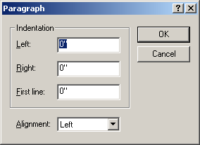

Dialog boxes usually interrupt the normal execution of the program to get some information from the user. They almost always have OK and Cancel buttons, or some other types of buttons that allow you to dismiss the window.
You can usually use the tab key to move the cursor from field to field. The position of the cursor among a set of dialog controls is called the input focus in programming parlance.